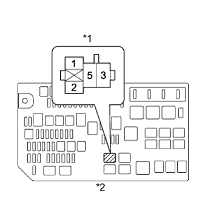

SFI SYSTEM > Starter Signal Circuit |

| 1.READ VALUE USING INTELLIGENT TESTER (STARTER SIGNAL) |
Connect the intelligent tester to the DLC3.
Turn the engine switch on (IG).
Turn the tester on.
Enter the following menus: Powertrain / Engine and ECT / Data List / Starter Signal.
Read the value.
| Engine Switch Position | Starter Signal |
| On (IG) | Close |
| START | Open |
|
| ||||
| OK | ||
| ||
| 2.CHECK STARTER RELAY (ST) (POWER SOURCE) |
|  |
Remove the starter relay (ST) from the engine room relay block.
Measure the voltage according to the value(s) in the table below.
| Tester Connection | Condition | Specified Condition |
| Starter relay (ST) terminal 1 - Body ground | Engine cranking | 11 to 14 V |
| *1 | Starter Relay (ST) |
| *2 | Engine Room Relay Block |
Reinstall the starter relay (ST).
|
| ||||
| OK | |
| 3.INSPECT STARTER RELAY (ST) |
Inspect the starter relay (ST) (Click here).
|
| ||||
| OK | |
| 4.CHECK HARNESS AND CONNECTOR (STARTER RELAY (ST) - BODY GROUND) |
Remove the starter relay (ST) from the engine room relay block.
Measure the resistance according to the value(s) in the table below.
| Tester Connection | Condition | Specified Condition |
| Starter relay (ST) terminal 2 - Body ground | Always | Below 1 Ω |
Reinstall the starter relay (ST).
|
| ||||
| OK | ||
| ||
| 5.CHECK HARNESS AND CONNECTOR (STARTER RELAY (ST) - PARK/NEUTRAL POSITION SWITCH) |
Remove the starter relay (ST) from the engine room relay block.
Disconnect the park/neutral position switch connector.
Measure the resistance according to the value(s) in the table below.
| Tester Connection | Condition | Specified Condition |
| Starter relay (ST) terminal 1 - C33-5 | Always | Below 1 Ω |
| Tester Connection | Condition | Specified Condition |
| Starter relay (ST) terminal 1 or C33-5 - Body ground | Always | 10 kΩ or higher |
Reinstall the starter relay (ST).
Reconnect the park/neutral position switch connector.
|
| ||||
| OK | |
| 6.INSPECT PARK/NEUTRAL POSITION SWITCH ASSEMBLY |
Inspect the park/neutral position switch assembly (Click here).
|
| ||||
| OK | |
| 7.CHECK HARNESS AND CONNECTOR (PARK/NEUTRAL POSITION SWITCH - POWER MANAGEMENT CONTROL ECU) |
Disconnect the park/neutral position switch connector.
Disconnect the power management control ECU connector.
Measure the resistance according to the value(s) in the table below.
| Tester Connection | Condition | Specified Condition |
| C33-4 - G38-3 (STAR) | Always | Below 1 Ω |
| Tester Connection | Condition | Specified Condition |
| C33-4 or G38-3 (STAR) - Body ground | Always | 10 kΩ or higher |
Reconnect the park/neutral position switch connector.
Reconnect the power management control ECU connector.
|
| ||||
| OK | ||
| ||